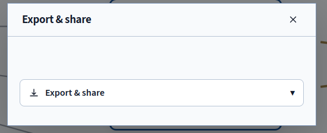

Export & Sharing
Choose a live project link, an exported copy, or a submitted revision according to what you want readers to see.

Project Link
Open Project → Export & share → Project link to create an unguessable link to the live map. A course link opens for current members of that course. A general-workspace link opens for signed-in Lab members. Recipients need both the link and the appropriate membership.
Project links expire after 90 days, and you can revoke them sooner. A copied link preserves those access requirements. Because the link opens the live map, later changes appear there too.
Picture and Document Exports
Choose PNG or PDF when readers need a picture of the map. Both formats arrange visible items in four level columns and number the relationships, scope connections, and setting memberships in a legend. The PDF contains one raster page. Markdown presents the map as text for discussion, while CSV lets you examine it in a spreadsheet. The CSV export neutralizes cells that a spreadsheet could interpret as formulas.
Choose JSON when you need a project file you can reopen with its stable IDs and layout. The app validates an imported file before replacing the open project. Every export draws from the cumulative graph across levels and excludes rejected or retired relationships, along with relationships whose endpoints are missing.
The browser creates exported files locally. Use Prepare copy for to select the intended audience. Portable copies apply that audience's redactions and record which redactions occurred. Review the copy before sharing it.
Submitting a Revision (Course Workspaces)
Save your work, then open Project → Progress and choose Submit revision. The app waits for the account save before submitting. Your instructor receives a snapshot under Submissions in the Instructor Console, grouped by project, level, and stage.
The app combines identical consecutive submissions into one record. Autosaves and model requests leave your work unsubmitted. The instructor can respond later with feedback, which leaves your map intact for you to revise.
Recovery Copies
The app checks revisions before saving to your account so an older copy cannot silently overwrite newer work. The browser also keeps a recovery copy. If two tabs or a lost connection leave that copy out of step with the account, the app preserves it separately for recovery export. If browser storage fails, you can still export the project held in memory.